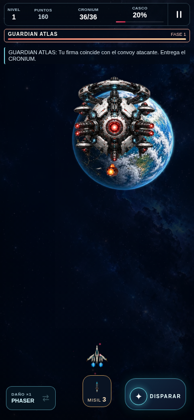
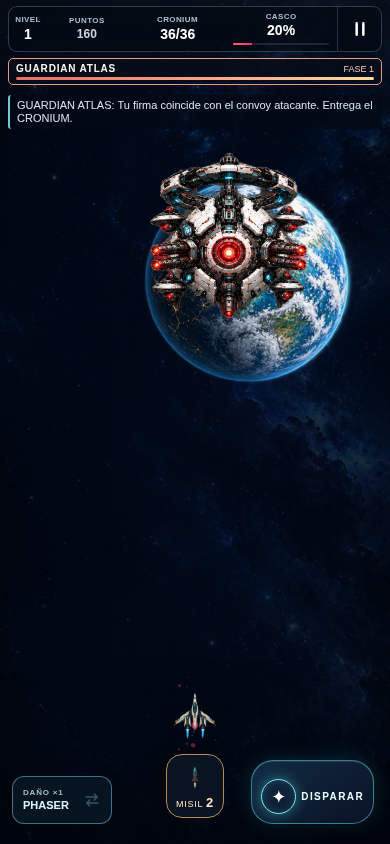
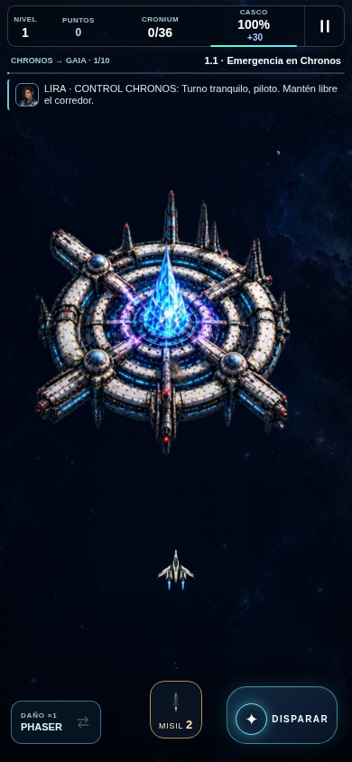

NEON CRONIUM · Pulido especializado
Capturas reales de escenas controladas. Antesf634a46 / después99bf90b. No son concept art. Aceptación artística y dispositivo pendientes.
Atlas: núcleo expuesto
Capturas auténticas de escenas controladas, 390×844. Antes f634a46; después99bf90b. Varían posición/instante: no es diff píxel a píxel ni prueba de balance.

Antes
DespuésAtlas: fase2 sin recortes
Escena controlada, coraza cerrada en ataque y extremos completos; contraste sobre Gaia pendiente de revisión.
Nave: propulsión Bastion
Render real con bankfixture. Chorros compuestos con proporción original y anclajes; tamaño40% conservado.
Después
CRONIUM: energía ilustrada
Captura real con recurso insertado para revisar su contorno; no es recogida natural.
Después
Pantalla pequeña
320×568. Revisión técnica aprobada; separación de transmisión y contraste pendientes.
Misil: impacto y restos propios
Capturas reales con fixture de edad del efecto; no genera daño o recompensa.
 Impacto
Impacto
Restos